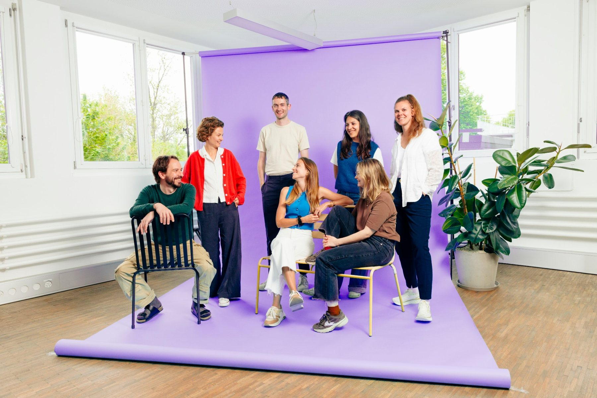

Digitale Unterstützung unter Betroffenen stärkt emotionale Unterstützung, soziale Verbundenheit, Coping und Selbstwirksamkeit.
Yeo et al., 2022, 2025; Yuan et al., 2025[Titel, Journal und Link ergänzen]
Für Organisationen im Gesundheits- und Sozialwesen
Mit erprobter Methodik und auf wissenschaftlicher Grundlage bringen wir Betroffene und Angehörige in deiner Organisation zusammen. So erreichst du mehr Menschen, wirksamer und mit den Ressourcen, die du hast.
Organisationen, die mit restful arbeiten
Was du bekommst
Methode & Evidenz
Wir stützen unsere Arbeit auf Forschung und messen Wirkung im laufenden Betrieb. Zwei Übersichtsarbeiten zeigen, was Austausch unter Betroffenen leisten kann.
Digitale Unterstützung unter Betroffenen stärkt emotionale Unterstützung, soziale Verbundenheit, Coping und Selbstwirksamkeit.
In der Onkologie zeigt Austausch unter Betroffenen kleine bis moderate Effekte auf das psychosoziale Befinden. Die Forschung dazu reicht Jahrzehnte zurück.
So starten wir gemeinsam
Beantworte eine Frage, und wir zeigen dir, wie wir gemeinsam starten würden.
Wir klären mit dir, ob und in welcher Form ein Angebot zu deiner Organisation passt, und bauen es Schritt für Schritt mit dir auf.
Erster Schritt: Wir starten mit einer Bedürfnisanalyse mit dir und mit Betroffenen.
Wir ergänzen dein bestehendes Angebot digital, damit auch Menschen dazukommen, die heute nicht teilnehmen können.
Erster Schritt: Wir starten mit einer Bestandsaufnahme deines heutigen Angebots.
Wir schauen mit dir genau hin, wo es hängt, und richten das Angebot gezielt neu aus.
Erster Schritt: Wir starten mit einer Auswertung deines bestehenden Angebots.

Mit restful haben wir einen Partner gefunden, der unsere Vision versteht: Betroffene und Angehörige auf Augenhöhe zu vernetzen. Die Zusammenarbeit bei der Entwicklung der Austauschplattform für Menschen mit Cystischer Fibrose war durchweg professionell und partnerschaftlich. Das Ergebnis überzeugt: ein sicheres und wirkungsvolles Peer-Angebot, das echten Austausch und gegenseitige Unterstützung schafft. Ich kann restful als Entwicklungspartner uneingeschränkt empfehlen.»
Produkt
Hinter jedem Angebot steht eine Plattform, die wir für dich betreiben. So erleben sie deine Koordination und deine Mitglieder.

Für Spitäler, Kliniken und Institutionen
Wir konzipieren und entwickeln digitale und hybride Angebote entlang des Versorgungsverlaufs. Damit Patientinnen und Patienten auch zwischen den Terminen begleitet sind.
Häufige Fragen
Team

 Raphael ReberStrategie & Partnerschaften
Raphael ReberStrategie & Partnerschaften Sulamith ScheurerProduktmanagement
Sulamith ScheurerProduktmanagement Stefan NiederhauserTechnologie
Stefan NiederhauserTechnologie Chantal KuskeScientific Advisory
Chantal KuskeScientific Advisory Melanie SpeschaProjekte & Fundraising
Melanie SpeschaProjekte & Fundraising Lona GauglerIndustry Lead
Lona GauglerIndustry Lead Silvan JostTechnologie
Silvan JostTechnologieUnser Netzwerk
Sie begleiten uns mit ihrer Erfahrung aus Politik, Medizin, Wirtschaft und Zivilgesellschaft.
 Felix MuffVRP Concordia Versicherungen
Felix MuffVRP Concordia Versicherungen Dr. med. Christoph HamannLeiter Kinder- und Jugendpsychosomatik INSEL
Dr. med. Christoph HamannLeiter Kinder- und Jugendpsychosomatik INSEL Flavia WasserfallenStänderätin SP (Bern), Präsidentin Allianz Gesunde Schweiz, Präsidentin geliko
Flavia WasserfallenStänderätin SP (Bern), Präsidentin Allianz Gesunde Schweiz, Präsidentin geliko Melanie MettlerFinanzdirektorin Stadt Bern, Matronatskomitee Selbsthilfe CH
Melanie MettlerFinanzdirektorin Stadt Bern, Matronatskomitee Selbsthilfe CH Felix WettsteinNationalrat Grüne (Solothurn), Präsident pro-salute, Fachrat Public Health Schweiz
Felix WettsteinNationalrat Grüne (Solothurn), Präsident pro-salute, Fachrat Public Health Schweiz Andrea JansenInvestorin, Board Member Aepsy, mal ehrlich
Andrea JansenInvestorin, Board Member Aepsy, mal ehrlich Christian HirsigUnternehmer, Gründer PowerCoders & high-five.ai
Christian HirsigUnternehmer, Gründer PowerCoders & high-five.aiIm unverbindlichen Erstgespräch klären wir: